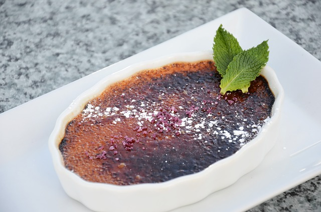
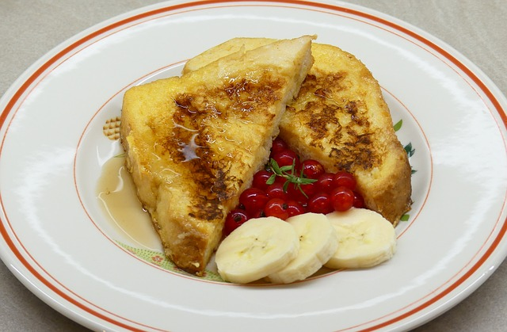
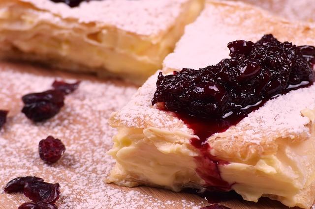

CREMA CATALANA |
Ingredientes
- 1 Litro de leche
- 200 gr de azucar
- 8 Yemas de huevo
- 25 gr de harina de Maiz (Maizena)
- Piel de 1 limon
- Canela en rama
- Azucar para quemar
|
 |
| Paso a paso |
- Pondremos un vaso de leche en un bol junto con la harina de maíz y removeremos para que se disuelva la maicena.
- Añadiremos las 8 yemas de huevo y el azúcar. Batiremos bien para que se mezclen todos los ingredientes.
- Pondremos a calentar con el fuego bajo y en un cazo ancho el resto de la leche y le añadiremos las ramas de canela y la piel del limón.
- Cuando empiece a hervir la leche pararemos el fuego y sacaremos las ramas de canela y la piel del limón.
- Añadiremos a la leche la mezcla de los huevos y el azúcar. Removeremos para que se mezclen los ingredientes.
- Encendemos de nuevo el fuego y lo pondremos al mínimo. Continuaremos batiendo la mezcla sin parar para que no se pegue, hasta que empiece a hervir de nuevo y vaya espesando.
- Cuando hierva apagaremos el fuego y pondremos la crema en recipientes individuales de barro o bien en una fuente. Dejaremos enfriar.
- En el momento de servir la crema catalana, pondremos azúcar por encima y lo quemaremos con un quemador o una pala de quemar hasta que el azúcar quede caramelizado.
|
|
Inicio
|
TORRIJAS |
Ingredientes
- 1/2 barra de pan de vispera
- 1 vaso de nata
- 1 rama de canela
- Harina
- Aceite de oliva extra virgen
- 1 vaso de leche
- 4 cucharadas de azucar
- 1/2 de cucharadita de canela en polvo
- 2 huevos
|
 |
| Paso a paso |
- Pon a cocer la leche y la nata en una cazuelita. Añade la rama de canela y 2 cucharadas de azúcar. Cuando empiece a hervir pásalo a una fuente amplia y baja y retira la canela. Con un cuchillo de sierra corta el pan en rebanadas (de 2 centímetros) e introdúcelas en el recipiente de la leche. Deja reposar hasta que se empapen bien. Coloca la harina en un plato y bate los huevos en un recipiente.
- Pasa las rebanadas de pan por harina y después por el huevo batido. Pon 2 dedos de aceite a calentar en una sartén. Introduce los trozos de pan y fríelos por los 2 lados.
- Retira las torrijas y escúrrelas sobre papel absorbente de cocina.
- Mezcla las otras 2 cucharadas de azúcar con la canela en polvo y espolvoréalas.
|
|
Inicio
|
PASTELITOS DE MEMBRILLO Y BATATA |
Ingredientes
- 500 gramos de harina
- 150 gramos de manteca para la base + 150 gramos para untar la masa
- 1 taza de agua (aproximadamente)
- Una pizca de sal
- 1/2 kilo de dulce de batata o de membrillo
- Aceite para freír
- 400 gramos de azúcar
|
 |
| Paso a paso |
- Colocar la harina con la sal en forma de corona, la manteca cortada en el centro e ir armando la masa. Agregar de a poco agua (más o menos una taza) hasta obtener una masa lisa. Dejar descansar 20 minutos. Estirar la masa hasta que tenga el espesor de 1 centímetro. Untar con 50 g de manteca derretida, espolvorear con harina y doblar en tres. Estirar nuevamente la masa para pastelitos. Volver a untar con otros 50 g de manteca, espolvorear con harina y volver a doblar en tres. Dejar reposar en la heladera por 30 minutos. Estirar la masa hasta que quede de unos 3 mm de espesor y cortar cuadrados de 8 cm.
- Colocar dulce de membrillo o de batata en el centro de cada cuadrado. Pintar con agua alrededor del dulce. Cubrir con otro cuadrado de masa con las puntas superpuestas. Pellizcar de abajo la masa, presionando en los bordes para cerrar los pastelitos. Freír con abundante aceite que deberá estar tibio al momento de poner los pastelitos y luego caliente para que se doren. Bañarlos frecuentemente con el aceite.
- Hacer el almíbar: Poner en una cacerola el azúcar. Cubrir el azúcar con agua. Hacer hervir unos minutos hasta que el almíbar apenas tome color. Pasar los pastelitos por el almíbar. Retirar y servir.
|